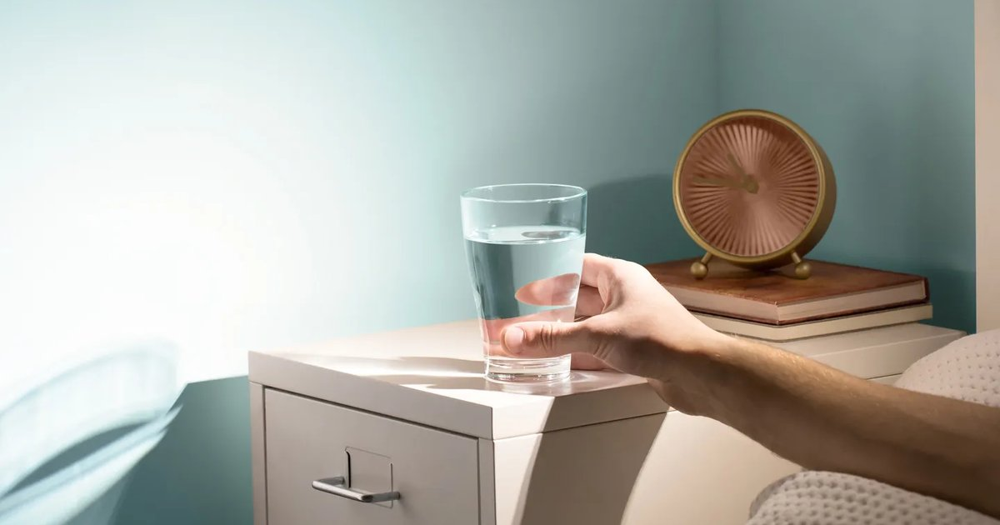

I used to be the kind of person who stumbled to the coffee maker before doing anything else. No water, no bathroom stop, just straight to the machine. I would stand there in my pajamas, pressing buttons, waiting for the first hit of caffeine like it was medicine. Then I’d drink my coffee, maybe eat some toast, and start my day. I felt fine. Not great, but fine. Then I learned about overnight fluid loss. Every night, while you sleep, you lose about 500 to 800 milliliters of water. That’s 17 to 27 ounces. You breathe it out. You sweat it out, even in a cool room. Your body is still running, still metabolizing, still producing waste. By the time you wake up, you’re running a mild deficit. That deficit might not be enough to make you feel thirsty, but it’s there. And if you start your day with coffee, which is a mild diuretic, you’re adding to the deficit instead of fixing it. The first time I actually measured my morning deficit, I weighed myself before bed and again after waking. I had lost 0.7 kilograms (1.5 pounds). That’s about 700 milliliters (24 ounces) of fluid. I was shocked. I had no idea I lost that much overnight. And I had been drinking my morning coffee without replacing any of it. No wonder I sometimes felt headachy by 10 AM. So I tried an experiment. For one week, I forced myself to drink 500 milliliters (17 ounces) of plain water — “the baseline” — within ten minutes of waking. Before coffee. Before checking my phone. Before anything. I kept a bottle on my nightstand so I didn’t have to walk to the kitchen. The first day, it felt weird. I wasn’t thirsty. The water sat in my stomach like a rock. But I drank it anyway. By day three, my body started to expect it. I woke up slightly thirsty. By day seven, I was reaching for the bottle without thinking. And the difference in how I felt was noticeable. My morning fog cleared faster. My skin looked less dry. I stopped getting those 10 AM headaches. My first cup of coffee actually felt like a pleasure, not a necessity. The science backs this up. When you’re even 1% dehydrated, your cognitive performance drops. Reaction time slows. Memory gets fuzzier. Mood sours. That morning deficit of 500‑800 mL is about 1% of body weight for a 70‑kilogram person. So you’re starting your day already in a cognitive hole. Then you drink coffee, which makes you pee sooner, and you stay in that hole longer. The fix is absurdly simple. Keep water by your bed. Drink it when you wake up. Wait 20 minutes before coffee. That’s it. I now prescribe this routine to almost every client. Not the athletes, not the people with kidney stones, just regular people who want to feel better. The success rate is high. People come back to me and say, “I didn’t think it would make a difference, but I have so much more energy in the morning.” Or, “My skin cleared up.” Or, “I stopped snacking mid‑morning because I’m not mistaking thirst for hunger.” One client, a teacher named Rachel, had chronic afternoon fatigue. She thought it was her thyroid. We tested her morning hydration first. She was drinking zero water before her 6 AM coffee. I asked her to try 500 mL of water upon waking for two weeks. She called me after five days. “I can’t believe it,” she said. “I’m not crashing after lunch anymore. I feel like a different person.” Her thyroid was fine. Her hydration was not. Another client, a construction worker named Luis, was getting muscle cramps in the afternoon. He drank water during the day but nothing in the morning. We added 500 mL before he left the house, plus a pinch of salt. His cramps reduced by about 80%. He said, “I was trying to fix the problem in the middle of the day. I should have been fixing it at the start.” The 20‑minute gap before coffee is important. Water absorbs quickly, but it needs some time to leave your stomach and enter your bloodstream. If you chug water and then immediately drink coffee, you dilute the coffee and you might need to pee sooner. Give your body 20 minutes to process the water. Use that time to shower, get dressed, make your breakfast. Then have your coffee. Your bladder will thank you. I’m not anti‑coffee. I love coffee. I drink two cups every morning. But I drink my 500 mL of water first. That water doesn’t replace the coffee. It just makes the coffee work better because my body isn’t starting from a deficit. The other thing about morning hydration is that it sets a pattern for the rest of the day. If you start with water, you’re more likely to continue drinking water. If you start with coffee or soda, you’re more likely to reach for another caffeinated drink later. It’s a cue. Your brain says, “I drink fluids in the morning,” and then it follows that script. Changing the first fluid changes the whole script. I tested this on myself. For a month, I drank coffee first. For the next month, I drank water first. The water‑first month, my total daily fluid intake was about 500 mL higher. I just naturally drank more water throughout the day because I had already started the habit. The coffee‑first month, I drank less total fluid. Same activity level, same climate. Just the order changed. The morning routine also helps with electrolytes. If you add a pinch of salt or an electrolyte tablet to that first 500 mL, you’re replacing not just fluid but also the sodium lost overnight. I do this in the summer or after a hard workout the previous day. In the winter, plain water is fine. For people who really hate water, I suggest infused water. Lemon slices, cucumber, mint, a splash of juice. That tiny bit of flavor can make it easier to drink. But plain water is best because it has no calories and doesn’t interfere with the absorption. Save the flavors for later in the day. I have a client who drinks warm water with lemon every morning. She says it helps her digestion. The temperature doesn’t matter for hydration. Cold, warm, room temperature — your body will absorb it. The lemon adds a tiny bit of vitamin C and flavor. It’s fine. The important part is the volume, not the temperature or the lemon. Another trick is to use a marked bottle. I have a 500 mL bottle with a line at the top. I know that when I finish that bottle, I’ve done my job. Then I don’t think about it again until I have my coffee.Hydration Goal Setter
Track your morning streak. Set a reminder to drink 500 mL upon waking. The app celebrates your consistency.
All data stays in your browser — we never see it.
Daily Water Intake Calculator
Get your total daily goal, then subtract 500 mL for the morning. The rest is easy.
All data stays in your browser — we never see it.